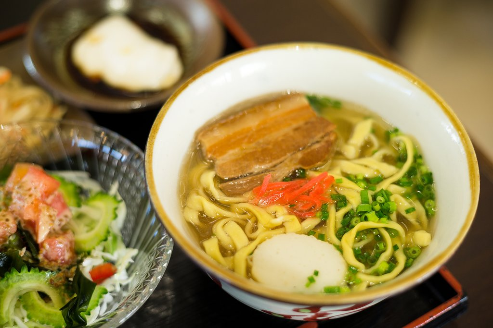
沖繩蕎麥麵
一種與日本本土拉麵不同的當地麵食。麵條用小麥粉製成，搭配豬肉排骨和魚湯，湯頭清淡而香濃。沖繩蕎麥麵通常加上紅薑和蔥花增添風味，是沖繩最具代表性的美食之一。
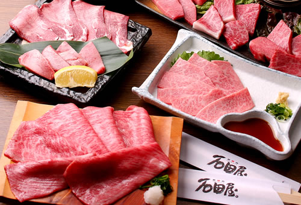
石垣牛
來自沖繩石垣島的高級和牛，以其柔嫩多汁、油花豐富而聞名。石垣牛可以用來製作各種料理，包括燒烤、壽喜燒和牛排。其肉質鮮嫩，入口即化，是沖繩不可錯過的美味。
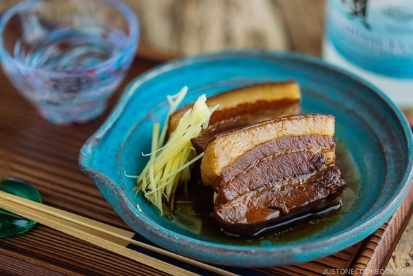
豬腳
沖繩傳統料理中的一道經典菜肴。這道菜是用豬腳慢火燉煮，加入糖、醬油和泡盛，使豬腳入口即化，味道香甜而不膩。豬腳通常與白飯一起食用，是一道充滿風味的美食。
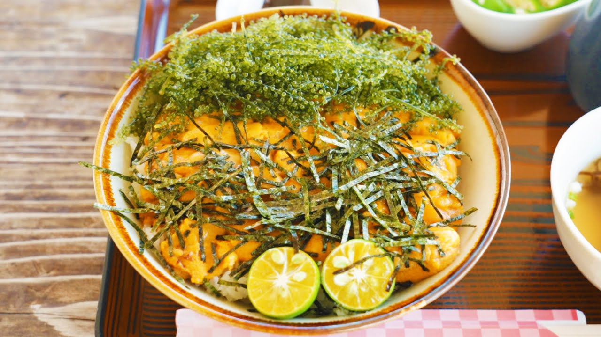
海膽飯
沖繩沿海地區的一道美食，選用新鮮的海膽搭配米飯。海膽的鮮甜和米飯的香糯完美結合，入口鮮美，令人回味無窮。這道菜非常適合喜愛海鮮的遊客品嚐。

塔可飯
將墨西哥塔可與日本米飯相結合的創意料理。這道菜包括塔可肉、生菜、番茄、起司和塔可醬，全部放在熱騰騰的白米飯上。塔可飯是沖繩駐日美軍基地附近流行的美食，現在已成為當地的一道特色菜。
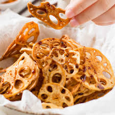
沖繩蓮藕餅
將蓮藕切成薄片後油炸，撒上鹽或調味料製成的脆片。這道小吃口感酥脆，帶有蓮藕的清香，是沖繩當地人和遊客喜愛的小零食。
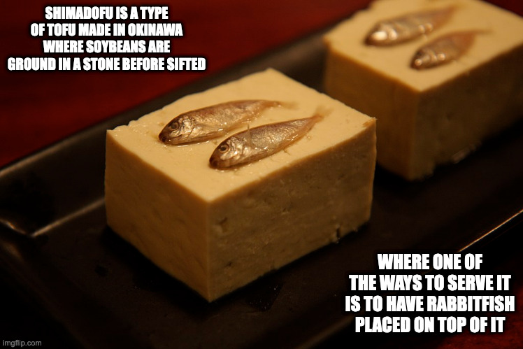
島豆腐
沖繩特有的一種豆腐，與日本本土的豆腐相比更為結實耐煮。島豆腐可以用來製作各種料理，包括湯、炒菜和燒烤。其口感緊實，有著濃郁的豆香味，是沖繩飲食中的重要食材。
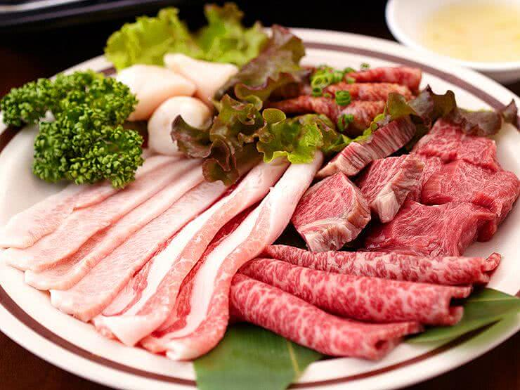
阿古豬
沖繩特有的一種黑豬肉，以其細膩的肉質和豐富的油花聞名。阿古豬肉質鮮嫩，適合用來做燒烤、火鍋和燉菜。這種豬肉的獨特風味使其成為沖繩高級餐廳中的常見食材。
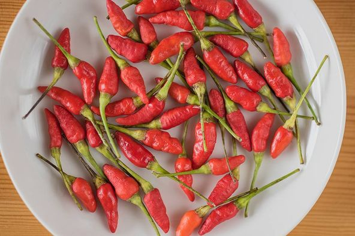
島胡椒炒蛋
島胡椒是一種沖繩特有的辣椒，常被用來調味各種菜餚。島胡椒炒蛋是將這種辣椒與雞蛋一起炒製而成，口感辛香，帶有淡淡的辣味，是一道簡單卻美味的家常菜。

沖繩羊羹
一種使用紅豆和黑糖製成的甜點。這種羊羹口感細膩，甜度適中，帶有濃郁的黑糖香氣。它常被作為伴手禮，深受當地人和遊客的喜愛。
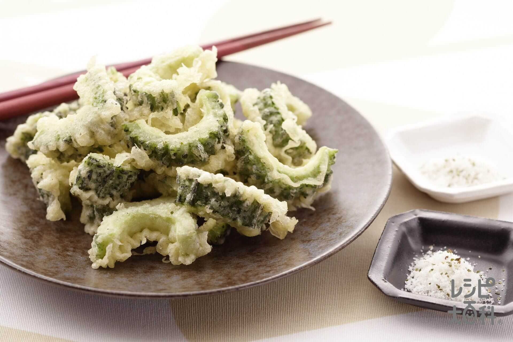
苦瓜天婦羅
將苦瓜切片裹上麵糊油炸製成的。這道小吃將苦瓜的微苦味與天婦羅的酥脆口感結合在一起，形成獨特的風味。
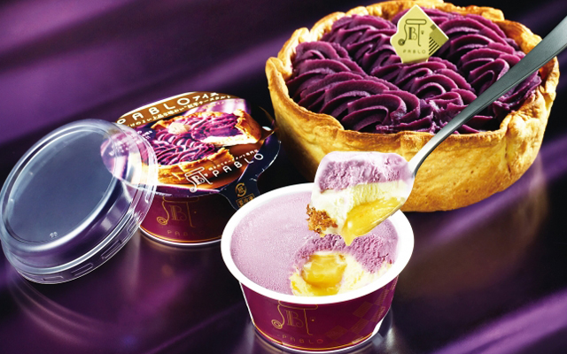
紅芋冰淇淋
用沖繩當地的紅芋製作而成，顏色鮮豔，口感綿密細膩，帶有紅芋的香甜。在炎熱的夏季特別受歡迎，是沖繩著名的甜點之一。
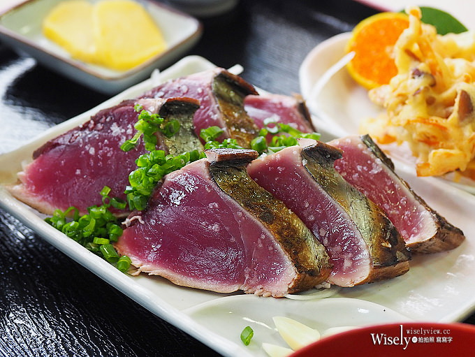
鰹魚片
將鰹魚略微燒烤後切成薄片，搭配醬油、薑蓉和大蒜一起食用。保留了鰹魚的鮮美，口感鮮嫩，常常作為開胃菜或下酒菜，是沖繩人喜愛的一道美食。
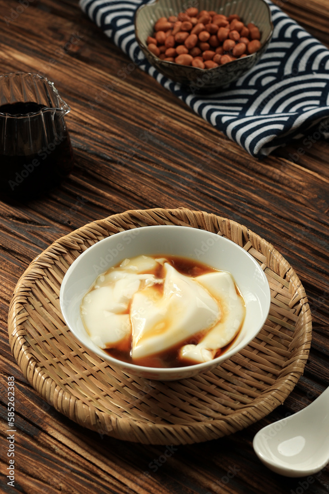
花生豆腐
用花生和地瓜澱粉製作的特有豆腐。這種豆腐口感滑嫩，帶有淡淡的花生香氣，常常作為涼菜或甜點食用。其獨特的風味使其成為沖繩的一道特色美食。

沖繩咖喱
一種帶有當地風味的日式咖喱，通常會加入當地特有的食材，如苦瓜、蓮藕和島豆腐。這種咖喱口感濃郁，辛香四溢，與米飯搭配，形成美味的沖繩風味餐。
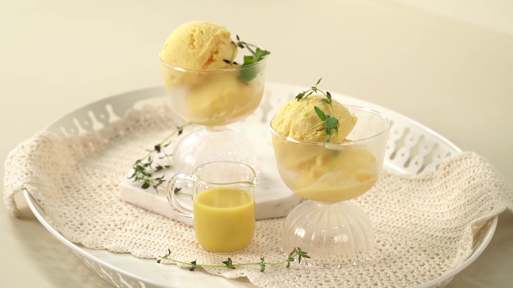
泡盛冰
將沖繩特有的烈酒泡盛融入冰淇淋中製作而成。這種冰淇淋口感順滑，帶有淡淡的酒香和清涼感，是沖繩夏季受歡迎的甜點。